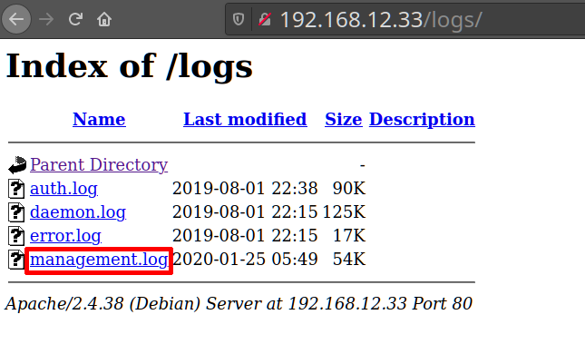
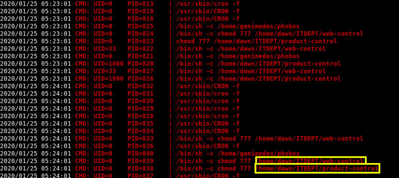

This gave us a bunch of different log files like “auth.log”, “daemon.log”, “error.log” and “management.log”. We tried to access the all those log files but we got forbidden message in all except “management.log”.
Output: 
c) Download the file clicking on it.
e) Let's what there's inside.
On our Kali Machine.
$ cd Downloads $ cat management.log
Output: 
We see that we have a directory named “ITDEPT”. It contains two files namely “product-control” and “web-control”. As these files were mentioned with cron, we can safely say that these files are getting executed by some background task.